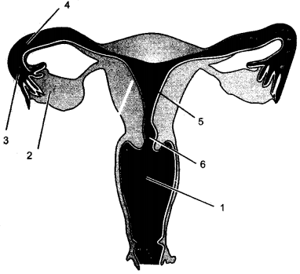
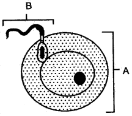

Question 1: What is sexual reproduction ? What are its essential features ?
Answer: It is a type of reproduction usually found in higher animals and plants where male and female sexes produce male and female heterogametes separately, which on fertilisation produce a zygote.
Question 2: Give two important unique features of the human reproductive system.
Answer: (i) It has the longest reproductive phase.
(ii) There is no specific breeding season. It can take place any time during the year.
Question 3: Name the various organs of male reproductive system of man.
Answer: Male reproductive organs of man:
1. A pair of testes.
2. A pair of epididymis
3. A pair of vas deferentia
4. A pair of seminal vesicle
5. Urethra
6. Penis
7. Male reproductive glands (Cowper’s and Prostate gland).
Question 4: What are the functions of testes ?
Answer: The main function of testes is the production or formation of sperms. They also secrete male sex hormone testosterone which is responsible for the development of secondary sexual characters in male.
Question 5: Write in sequence the regions which a mature sperm travels from the seminiferous tubules up to the urethral opening ?
Answer: Course of sperms in a male
Question 6: What is semen ?
Answer: Semen is a fluid which contains sperm cells, secretion of accessory glands, fibrinogen, thromboplastin and calcium salts.
Question 7: What is fertilization ? Name the site of fertilization in human female.
Answer: The union of male and female gametes to form the zygote is called fertilization. In human female the site of fertilization is oviduct or fallopian tube.
Question 8: What are the signs of puberty in human male and female ?
Answer: In a boy: Change of voice and discharge of semen.
In a girl: Appearance of the menses, appearance of mammary glands and widening of the hips.
Question 9: What differences are there in number, structure and activity of the male and female gametes in man?
Answer:
| Male Gametes | Female Gametes |
| Number: Very large. | Normally one at a time. |
| Structure: A sperm is about 50-55 microns long with head, acrosome neck and lashing tail. | It is spherical and non-motile. |
| Activity: With the help of lashing tail, it moves actively towards the oviducts. | Passively carried from ovary to oviduct. |
Question 10: (i) Rewrite the following terms in a correct and logical sequence:
Luteal phase, follicular phase, menstrual phase, ovulatory phase.
(ii) Differentiate on the basis of what is indicated in brackets :
Prostate gland and Cowper’s gland (the nature of secretion)
Answer: (i) Menstrual gland phase, follicular phase, ovulatory phase, luteal phase.
(ii) Prostate gland secretes an alkaline secretion for the maintenance of the sperms while Cowper’s gland secretion is meant for lubrication.
Question 11: Define the four stages in the uterine cycle.
Answer: The uterine cycle consists of four distinct stages as follows :
(i) Menstruation: It lasts for about five days.
(ii) Follicle stage: From the end of menstruation to the release of ovum, it lasts for 10-14 days.
(iii) Ovulation: It is the release of ovum from the ovary.
(iv) Corpus luteum stage : It lasts from ovulation to menstruation for about 10-14 days.
Question 12: (i) Where does fertilization occur ?
(ii) Name two essential structures which take part in fertilization.
(iii) What happens to the zygote after fertilization ?
Answer: (i) In the Fallopian tube.
(ii) The egg and sperm fuse to form zygote during fertilization.
(iii) After fertilization, the zygote divides to form several celled embryo which is implanted in the uterus for further development.
Question 13: (i) Name the female sex hormones and structures which secrete them.
(ii) How is the foetus protected ?
Answer: (i) 1. Oestrogen produced by ovarian follicle and placenta.
2. Progesterone produced by corpus luteum.
3. Relaxin produced by ovary and placenta.
(ii) The human foetus is protected by the amnion layer having amniotic fluid and the yolk sac.
Question 14: What is a Placenta ? How is it formed ? What are its functions ?
Answer: The placenta is an organ composed of blood capillaries, villi, connecting tissue and latent endocrinal cells. It is formed by the union of uterine endometrial tissue, chorion and allantois (embryonic tissue). It is attached to the wall of the uterus and through it, exchange of nutrients, hormones, respiratory gases and urea occurs between the foetal and maternal circulation.
Question 15: Mention three functions of placenta.
Answer: (i) It connects the foetus with the uterus of mother.
(ii) It helps in the exchange of nutrients, gases and waste products between mother and the foetus.
(iii) It acts as an endocrine gland and secretes chorionic gonadotrophin hormone which maintains the pregnancy.
Question 16: The circulatory system of the foetus and that of the mother are never connected directly. What are the advantages ?
Answer: The separate circulatory system facilitates quick diffusion of nutrients, metabolic waste and respiratory gases between the foetus and the mother. Bacteria and other pathogens cannot pass from the mother to the foetus because they are filtered out by the placenta. Blood pressure changes in the maternal circulation also cannot affect the foetus which has delicate blood vessels.
Question 17: What changes occur at the time of birth ?
Answer: A cycle of uterine contractions followed by labour pains, dilation of cervix and the vagina slowly pushes the foetus out of the uterus. The uterine contractions are initiated by decreased progesterone secretion and the secretion of oxytocin hormone by the pituitary gland. After the child delivery, the placenta is expelled out.
Question 18: Describe briefly the ways how a mammalian embryo is—(i) protected (ii) nourished and (iii) how it respires.
Answer: (i) The mammalian embryo is protected by two sacs:
(a) The chorion
(b) The amnion, which contains the amniotic fluid to protect the embryo from shocks. The embryo-is also protected by the thick, muscular wall of the uterus.
(ii) The mammalian embryo is nourished by the nutrients which diffuse through the placenta of the mother to pass through the umbilical cord to the embryo.
(iii) The mammalian embryo respires by the diffusion of oxygen through the placenta to enter the blood stream of the embryo. The waste carbon dioxide passes through the umbilical cord and leaves through the placenta.
Question 19: What do you understand by inguinal hernia ?
Answer: Inguinal Hernia: Sometimes due to pressure in the abdomen, the intestine bulges into the scrotum through inguinal canal and causes the most common type of hernia.
Question 20: What do you mean by identical and fraternal twins ?
Answer: Identical Twins (Produced from one egg): Sometimes a single fertilized egg may get split and separated into two parts during its early stages of cell division. Each of these two split parts then behaves like an independent egg and produces one complete individual each. These are called Identical twins.
Fraternal Twins: Sometimes, two eggs are released from ovaries at a time and both may get fertilized to produce two individuals. These are called fraternal twins.
Question 1: Gametes have an haploid (n) number of chromosomes.
Answer: The gametes take part in fertilization and after fertilization from the zygote in which the number of chromosomes is doubled. Hence, to maintain a constant number of chromosomes in a species, the gametes have haploid number of chromosomes.
Question 2: Urethra is also called urinogenital duct.
Answer: Since the urethra carries both urine and semen.
Question 3: At the time of birth, the testes descend into the scrotal sacs.
Answer: In human beings (mammals) the temperature required for the production and survival of sperms is lower than that of the body temperature. Hence, to provide a suitable temperature about 2 – 3°C lower than that of body temperature, the testes descend into the scrotal sec at the time of birth.
Question 4: Missing of menses is the first indication of pregnancy.
Answer: Because the endometrium of uterus along with the unfertilized egg is given out in the form of menstrual flow.
Question 5: The chances of pregnancy to occur are most favourable on or about the 14th day of the menstrual cycle. Explain.
Answer: The chances of pregnancy to occur are most favourable on or about the 14th day of the menstrual cycle because ovulation occurs on the 14th day and the egg so released remains viable for one to two days.
Question 6: Millions of sperms are produced at ejaculation yet one sperm actually fertilizes the ovum. Explain.
Answer: Only one ovum is released at a time in the human female during ovulation. Although millions of sperms are ejaculated only one sperm is enough to fertilize the single ovum. This arrangement is to control and maintain the growth rate of human population. The ovum secretes a protective wall that prevents entry of other sperms.
Question 7: A large number of sperms are required for fertilizing one egg.
Answer: The ovum does not exert any distant chemical attraction over the sperms. Hence to ensure that sperm reach every part of the female reproductive tract so that at least one sperm becomes available to ovum for its fertilization, large number of sperms are required.
Question 8: The acrosome of sperm secretes an enzyme called hyaluronidase at the time of fertilization.
Answer: This enzyme dissolved the membranous covering of the ovum to facilitate the entry of sperm into the ovum.
Question 9: The oviduct funnel is lined with cilia.
Answer: The ovum is non-motile and inactive female gamete and is released into the abdominal cavity. So, to pick up and push the ovum into the uterus the oviduct funnel is lined with cilia.
Question 10: Most often only one embryo is formed at a time although there are two ovaries in women. Explain.
Answer: One ovum under the influence of hormones is released alternatively every month.
Question 11: The full grown human embryo respires but does not breathe.
Answer: The full grown human embryo respires because the dissolved oxygen in the mother’s blood diffuses into the embryo and is used in the oxidation of glucose in the cells with the liberation of energy. However there are no breathing movements as the lungs lie collapsed in the embryo and only function after the foetus is expelled from the mother’s body. Therefore no breathing movements in the embryo as it receives oxygen by diffusion of gases.
Question 1: External fertilization and Internal fertilization.
Answer:
| External fertilization | Internal fertilization |
| It occurs outside the body of the animal through a medium such as water. | It occurs inside the body of the female. |
Question 2: Amnion and Chorion.
Answer:
| Amnion | Chorion |
| It is the innermost foetal membrane which secretes amniotic fluid. | It is the outer membrane which forms placenta with endometrium and allantois. It does not secrete amniotic fluid. |
Question 3: Uterus and Urethra.
Answer:
| Uterus | Urethra |
| It is a sac that holds, nourishes and protects the foetus. | It is a tubular passage for the exit of sperms and urine in mammals. |
Question 4: Urinogenital system and Urinary system.
Answer:
| Urinogenital System | Urinary System . |
| It is a combined system of excretory and reproductive functions. | It is an excretory system. |
Question 5: Foetus and Embryo.
Answer:
| Foetus | Embryo |
| It is an unborn infant after two months of intra-uterine life till birth. | It is an unborn infant during the first two months of intra-uterine life. |
Question 6: Isogametes and Heterogametes.
Answer:
| Isogametes | Heterogametes |
| These are similar in shape and size and unite to form a zygospore in conjugation. | These are dissimilar male and female gametes which produce zygote in fertilization. |
Question 7: Urinogenital duct and Ureter.
Answer:
| Urinogenital Duct | Ureter |
| It carries both gametes and urine. | It carries only urine. |
Question 8: Tubectomy and Vasectomy.
Answer:
| Tubectomy | Vasectomy |
| It is the tying up of oviducts with nylon thread to close the passage of egg towards uterus. | It is the surgical removal of a small bit from each Vas deferens (sperm duct) between two ligatures. Thus, the sperms cannot travel down. |
Question 9: Structure of the sperm and the structure of the Ovum.
Answer:
| Sperm | Ovum |
| Sperm is motile, consisting of head, neck, middle piece,and tail. It is haploid. | Ovum is rounded, immotile and haploid structure. |
Question 10: Sexual Reproduction and Asexual Reproduction.
Answer:
| Sexual Reproduction | Asexual Reproduction |
| It involves the gametes. | No gamete formation. |
| Two individuals are needed. | One individual involves in this reproduction. |
Question 11: Graffian follicle and Corpus luteum.
Answer:
| Graffian Follicle | Corpus Luteum |
| It is a fully developed ovarian follicle containing ovum. | It is a yellow mass formed after the release of an egg from the Graffian follicle which acts as an endocrine gland. |
Question 1: Given below is a diagram of the lateral section of a testis of a man. Study the same and answer the questions that follow:
Question 2: The diagram shown below is the lateral section of testis of man. Study it carefully and answer the questions that follow:
Question 3: The below diagram represents the sectional view of the female reproductive organs of a mammal.
Question 4: Given below is a diagram of the female reproductive system of a human being :

Question 5: The below diagram represents the vertical view of the human female reproductive system.
Question 6: Given below is the outline of the male reproductive system:
Question 7: Study the diagram given below and then answer the questions that follow:
Question 8: The diagram given below is that of a developing human foetus in the womb. Study the same and then answer the questions that follow:
Question 9: The adjoining figure represents the female reproductive organ of the humans:
Question 10: The diagram below represents two reproductive cells A and B. Study the same and then answer the questions that follow :

Question 11: The diagram given below shows an embryo in the uterus of mammal. Label the parts indicated.
Question 12: Study the diagram given below and then answer the questions that follow :
(i) Name the parts labeled 1 and 2. State the function of each part.
(ii) State any one function of the amniotic fluid.
(iii) What is the role of the umbilical cord in the development of the foetus?
(iv) Name the part in the diagram which is endocrine in nature.
Answer: (i) 1. Placenta—It helps irtIe nutrition, excretion and respiration of the embryo.
2. Chorion—It forms the placenta.
(ii) Amniotic fluid present in amniotic cavity, acts as shock absorber and prevents desiccation of embryo.
(iii) Umbilical cord makes the connection between placenta and foetus. It supplies the nutrients and 02 with maternal blood; to foetus and removes C02 and excretory wastes from foetus blood into maternal blood. Thus it acts as a transport channel between foetus and mother blood.
(iv) Placenta—Secrets HCG (Human Chorionic Gonadotropin) hormone.
Question 13: The below diagram is of a developing embryo is a mother’s womb:
Question 1: Draw a labeled diagram of sperm.
Answer:
Question 2: Sketch and label the human male reproductive system.
Answer:
Question 3: Draw a labeled diagram of human female reproductive system.
Answer:
Question 4: Give a labeled structure of ovum.
Answer:
Question:
1. Vas deferens
2. Penis
3. Graffian follicle
4. Gametogenesis
5. Androgens
6. Cowper’s glands
7. Scrotum
8. Parturition.
9. Foetus
10. Secondary sexual characters
11. Tubectomy
12. Vasectomy
Answer: 1. Vas deferens: The vas deferensis also known as the sperm duct and receives the sperms from the epididymis. The vas deferens opens into the top of the urethra after receiving the secretions from the seminal vesicles, prostrate gland and Cowper’s gland.
2. Penis: The Penis is a muscular and highly vascular copulatory organ composed of erectile tissue which serves to deposit the semen of the male into the vagina of the female during copulation or mating.
3. Graffian follicle: The ovum begins to develop in the ovary and as it matures, it migrates towards the surface of the ovary and becomes surrounded by a fluid filled follide called the Graffian follicle. Every 28 days, on an average, the most highly developed Graffian follicle ruptures to release a single ovum.
4. Gametogenesis: Formation of sperms in testes and ova in ovary is called gametogenesis.
5. Androgens: These are the male sex hormones that have been produced by the interstitial cells of the testes. The androgens are essential for the maturation of sex organs, development of the sperm and for promoting secondary sexual characters such as beard, mustache, the deepening of the voice etc.
6. Cowper’s gland: It secretes a fluid which mixes with the sperms, offers chemical protection and supports the swimming motion of the sperms. The mucous secretion of Cowper’s glands serves as lubricants and help to contract the acidity of the semen.
7. Scrotum: Each of the testes is present in a special sac, called scrotum which is located outside the abdominal cavity. In the scrotum, the testes are maintained at a temperature for less than the body temperature.
8. Parturition or birth: It is the expelling of the foetus from the body of the mother and it begins by the contraction of the uterine walls resulting in labour pains.
9. Foetus: The fertilized zygote gets implanted in the endometrial lining of the uterus and is called the foetus after undergoing cell division.
10. Secondary sexual characters: They develop at the time of puberty due to hormonal activity. In a female, there is development of breasts and change in body shape and size of hips. In a male, there is development of a beard and mustache and deepening of the voice.
11. Tubectomy: It is the operative procedure in female in which a small segment of oviduct is removed.
12. Vasectomy: It is an operative procedure in male in which a small segment of the vas deferens is removed.
Question:
1. The age or period when the reproductive organs become fully operational.
2. The term used when beard and mustache appear, harshening of voice, broadening of shoulders etc. takes place.
3. The basic unit of the testes.
4. Male copulatory organ.
5. The male gamete (male reproductive cells) of mammals.
6. The tubular knot fitting like a cap on the upper surface of the testes.
7. The site of production of sperms in man.
8. The structure in which testes are present in man.
9. The accessory gland in human males whose secretion activates the sperms.
10. Muscular extension of cauda epididymis.
11. The hormone that stimulates development of secondary sexual characters in males.
12. A female gonad responsible for the production of ova.
13. The female copulatory organ in human.
14. The structure formed after release of ovum from Graffian follicle.
15. Term used for mature follicle.
16. A cellular sac containing maturing egg.
17. The onset of menstruation in a young girl at about the age of 13 years.
18. Sloughing of uterine wall during menstrual flow.
19. The term used when females stop menstruation at the age of 45-50 years.
20. A hollow pear shaped muscular organ that holds, nourishes and protects the foetus.
21. The process of attachment of fertilized ovum to uterine wall.
22. How the embryo inside the uterus is protected from jerks or mechanical shocks.
23. The hormone that stimulates contraction of uterus during child-birth.
24. The expulsion of the foetus from the body of the mother.
25. Days in the human gestation period.
26. Surgical operation of fallopian tube in females for family planning.
27. What does these abbreviations stand for ?
LH, FSH, IUD.
Answer:
1. Puberty
2. Puberty
3. Seminiferous tubule
4. Penis
5. Spermatozoa
6. Epididymis
7. Testes
8. Scrotum
9. Prostate gland
10. Vas deferens
11. Testosterone
12. Ovary
13. Vagina
14. Corpus luteum
15. Graffian follicle
16. Follicle
17. Menarch
18. Menstruation or menses
19. Menopause
20. Uterus
21. Implantation
22. By Amniotic fluid
23. Oxytocin
24. Parturition
25. 280 days
26. Tubectomy
27. (i) LH: Lutenizing hormone.
(ii) FSH: Follicle stimulating hormone.
(iii) IUD: Intfa-uterine device.
Question:
1. The process of fusion of ovum and sperm.
2. Name the male gamete of a mammal.
3. How much semen is discharged per ejaculation in man ?
4. In which organ of the male reproductive system maturation of sperms takes place ?
5. Name the male reproductive cells of mammals.
6. What term is used for the production and maturation of sperms in the testes ?
7. The canal through which the testes descend into the scrotum just before birth of a human male . child.
8. The place where fertilization occurs in the female reproductive system.
9. Name the tube that leads from the ovary to the uterus.
10. What term is used for the production and maturation of eggs in the ovaries ?
11. Name the connective tissue surrounding the ovary.
12. The monthly discharge of blood and disintegrated tissues in a human female.
13. The onset of reproductive phase in a young female.
14. Rupture of the follicle and release of the ovum from the ovary.
15. Which part develops during the advanced pregnancy ?
16. What term is used for the arrest of reproductive capacity in females ?
17. What are the age restrictions for marriages by law for boys and girls in India ?
18. In how many weeks foetus development is completed ?
19. The part in the uterus which is concerned with the supply of nutrition from the mother to the foetus.
20. Name a membrane that surrounds the foetus and secretes a protective fluid.
21. The fluid surrounding the developing embryo.
22. The period of intrauterine development of the embryo.
23. Structure which connects the placenta with the foetus.
24. A method of contraception in which the sperm duct is cut and ligated.
25. The phase in the menstrual cycle in which the remnant of follicle in the ovary turns to corpus luteum.
Answer:
1. Fertilization
2. Sperm
3. 2.5 to 4 ml.
4. Testes
5. Interstitial cells
6. Spermatogenesis
7. Inguinal canal
8. Oviduct
9. Fallopian tube
10. Oogenesis
11. Mesovarium
12. Menstruation
13. Menarche
14. Ovulation
15. Placenta and uterus
16. Menopause
17. For boys 21 years; for girls 18 years
18. About 40 weeks after fertilization
19. Placenta
20. Amnion
21. Amniotic fluid
22. Gestation period
23. Umbilical cord
24. Vasectomy
25. Lateral phase
Complete the following sentences with appropriate words :
1. The sperms in a human male are produced in Testes.
2. Testosterone hormones is secreted by the interstitial cells.
3. The surgical sterilization of male is known as Vasectomy.
4. Fertilization of human egg by the sperm normally occurs in the Oviduct (fallopian tube).
5. The period of complete development of the foetus till birth is termed Gestation.
6. The umbilical cord connects Foetus and placna.
7. The process of releasing of egg from the ovary is called Ovulation.
8. A hormone secreted in a female to facilitate parturition is Oxytocin.
9. Placenta is Selectively permeable.
10. One egg is normally released from ovary in the human females after 28 Days.
11. Human gestation period is about 280 days.
12. The expulsion of the foetus from the body to the mother in a human female is called Parturition.
13. The female equivalent of penis is the Clitoris.
14. The embryo inside the uterus is protected from jerks or mechanical shocks by Amniotic fluid.
Mention, if the following statements are True or False. If false rewrite the wrong statement in its correct form:
1. Sperm is a single cell. (True)
2. Sperm is highly motile male gametes. (True)
3. Vas deferens transports sperms into urethra. (True)
4. Cowper’s gland opens into the urethra. (True)
5. Process of fusion of the sperm nucleus and the egg nucleus is termed implantation. (False, Process of fusion of the sperm nucleus and egg nucleus is termed fertilization.)
6. Zygote is the product of fusion of male and female gametes. (True)
7. Women after the age of 45 years normally cannot produce children. (True)
8. The cilia lining the oviduct funnel, push the released ovum into the uterus. (False, Cilia lining the oviduct funnel, push the released ovum into the oviduct.)
9. Menarche is the stoppage of menstruation. (False, Menarche is the onset of menstruation.)
10. Fertilization is the product of egg nucleus and sperm nucleus. (False, Fertilization is the product of fusion of egg nucleus and sperm nucleus.)
11. Pregnancy in women can be prevented by the method of vasectomy. (False, Pregnancy in women can be prevented by the method of tubectomy.)
12. Tubectomy involves the cutting and tying of the vas deferens in male. (False, Vasectomy involves the cutting and tying of the vas deferens in male.)
| Name | Location |
| Uterus | It is located above and behind the urinary bladder in the abdominal cavity. |
| Seminal vesicle | They are located at the posterior end of vas deferens between urinary bladder and rectum in male. |
| Prostate gland | It is present at the base of urinary bladder surrounding the urethra. |
| Ovary | Ovaries are located in the upper pelvic cavity one on each side of uterus. |
| Cowper’s glands | They are located beneath urinary bladder and behind the middle part of urethra about 4-5 cm below the prostate gland. |
| Bartholin’s glands. | They are located on the sides of vaginal orifice in female. |
Write the functional activity of the following structures:
| Name | Function |
| Uterus | It is a pear-shaped muscular sac that holds, protects and nourishes the foetus by its placenta. |
| Amnion | It is one of the extra-embryonic membranes that protects the foetus and secretes a shock absorbing fluid—amniotic fluid. |
| Prostate gland | It secretes alkaline fluid into the semen. This fluid neutralizes acidity of urine in the urinogenital canal. |
| Seminiferous tubules | These are found in the testes. They are lined with germinal epithelium, the cells of which produce spermatozoa by spermatogenesis. |
| Fallopian tubes | These are paired tubes on either side of the uterus. They have ciliated epithelial cell that carry the mature ovum to the uterus by sweeping action of their cilia. |
| Seminal vesicles | Their secretion provides energy source for the sperms and neutralizes the acidic medium in the urethra and female tract. |
| Ovary | Its main function is the formation of ovum (oogenesis). |
| Testis | The main function of testis is the formation of spermatozoa. |
| Placenta | Its main function is the exchange of materials between mother and the foetus (such as nutrients, respiratory gases and waste products). |
| Cowper’s gland | Its secretion lubricates the end of penis during copulation and neutralizes the acidic environment of the urethra. |
| Seminal fluid | It provides nutrition to the spermatozoa and neutralizes the acidic environment of the reproductive passage. |
| Inguinal canal | It connects the scrotum with the abdominal cavity. |
| Urethra | It acts as common passage for urine and spermatic fluid (semen). |
| Graffian follicle | Its main function is to allow the oocyte to grow to full maturity and release of mature ovum. |
1. Testes, Prostate gland, Seminal vesicle, Cowper’s gland. (Testes)
2. Vas deferens, Fallopian tube, Epididymis, Cowper’s gland. (Fallopian tube)
3. Testis, Penis, Oviduct, Seminiferous tubules. (Oviduct)
4. Oxytocin, Insulin, Prolactium, Progesterone. (Insulin)
5. Oestrogen, Progesterone, Testosterone, Prolactin. (Testosterone)
6. Larynx, Pancreas, Testis, Ovary. (Larynx)
7. Fallopian tube, Vagina, Uterus, Ovaries. (Ovaries)
8. Fallopian tube, Uterus, ovaries, Ureter. (Ureter)
9. Graffian follicle, Corpus ostium, Corpus albicans. (Corpus ostium)
10. Vagina, Vulva, Seminal vesicle, Uterus. (Seminal vesicle)
11. Ovum, Corpus luteum, Scrotal sacs, Ovary. (Scrotal sacs)
1. Which one of the following Is the route that a sperm follows when it leaves the testes of a mammal?
(a) Vas deferens → epididyrnis → urethra
(b) Urethra → epididymis → vas deferens
(c) Epididyrnis → urethra → vas deferens
(d) Epididymis → vas deferens → urethra
2. If the vas defererts of a man are surgically disconnected or removed:
(a) Semen will be without sperm
(b) Sperms in the semen will be without nudei
(c) Spermatogenesis will not take place
(d) Sperms in semen will be non-motile
3. What will happen if the temperature of the scrotal sacs temporarily goes to about 2°C lower than body tempeiture?
(a) Sperm formation will be stopped
(b) Testes will start rotation movement
(c) Scrotal sacs will contract and come close to the body
(d) Scrotal sacs will relax and go down away from the body
4. Fertilization means:
(a) The transfer of male gamete to the female gamete
(b) The adhesion of male and female reproductive organs
(c) The fusion of nuclei of male and female gametes
(d) The shedding of gametes from a reproductive organ
5. The site of maturation of human sperm is the:
(a) Seminiferous tubule (b) Interstitial cells
(c) Epididymis (d) Prostate gland
6. The onset of menstruation in the female is termed:
(a) Ovulation (b) Menarche
(c) Menopause (d) Parthenogenesis
7. Ovulation in mammals is a process in which:
(a) The egg is released from Graffian follide
(b) The egg is fertilized in fallopian tube
(c) The egg passes through fimbriated funnel of fallopian tube
(d) The unfertilized egg passes out of female’s body
8. Sterilization in the female involves cuffing and tying the:
(a) Ureter (b) Uterus
(c) Urethra (d) Oviduct
9. Corpus luteum in mammals occurs in:
(a) Brain and connects the two cerebral hemispheres
(b) Ovaries and produces progesterone hormone
(c) Heart and initiates atrial contraction
(d) Skin and acts as a pain receptor
Column ‘II’ is a list of items related to ideas in Column ‘I’. Match the term in Column ‘II’ with the suitable idea given in Column ‘I’.
| Column I | Column II |
| (i) Acrosome
(ii) Ovulation (iii) Sperm (iv) Menopause (v) Implantation (vi) Fertilization (vii) Contraception in males |
(a) Male gamete
(b) Oviduct (c) Uterus (d) Spermatozoa (e) Progesterone (f) Stoppage of menstrual cycle (g) Sudden change in genes |
Answer: (i) (d) (ii) (e) (iii) (a) (iv) (f) (v) (c) (vi) (b) (vii) (g)